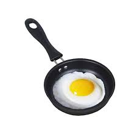

pans were made back in the bronze age around 3500 BC. they were originally made from
bronze and later on from iron and other metals. pans have been used for cooking food
over an open flame or on a stove. they come in various shapes and sizes, each designed
for specific cooking methods such as frying, sautéing, or baking. modern pans often
feature non-stick coatings and ergonomic handles for ease of use. overall, pans are
an essential tool in any kitchen, allowing us to prepare a wide variety of delicious meals.
